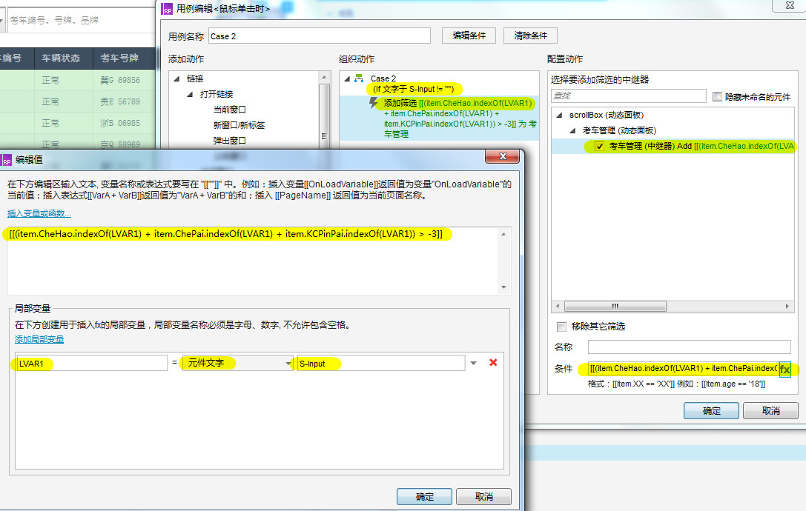
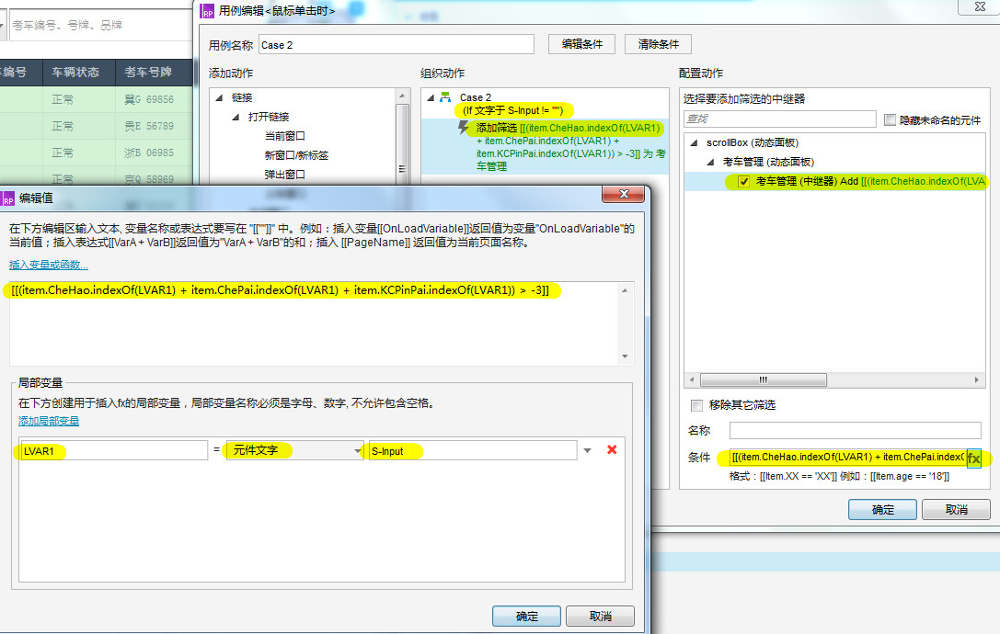

模糊搜索
[[LVAR.indexOf('searchValue')]]- 函数说明
- 在LVAR搜索searchValue
- 单条件模糊搜索
- [[item.KCPinPai.indexOf(LVAR1) > -1]]
- 多并列条件模糊搜索
-
[[(item.CheHao.indexOf(LVAR1) + item.ChePai.indexOf(LVAR1) + item.KCPinPai.indexOf(LVAR1)) > -3]]
车辆编号、车牌号牌、车辆品牌三项中只要有一项符合条件即可搜索 - 多组合条件模糊搜索
-
[[(item.CheHao.indexOf(LVAR1) + item.ChePai.indexOf(LVAR1) + item.KCPinPai.indexOf(LVAR1)) > -1]]
车辆编号、车牌号牌、车辆品牌三项均符合条件才可搜索
下面示例图为三条件并列模糊搜索
 
